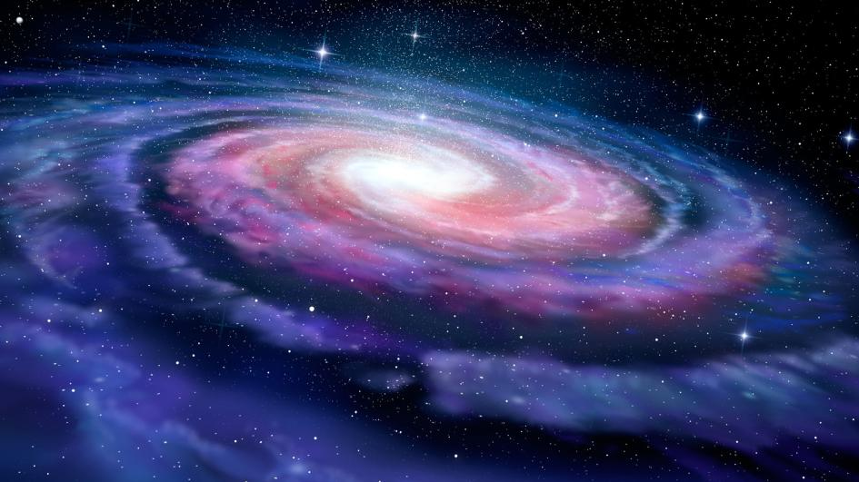
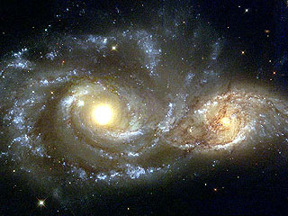
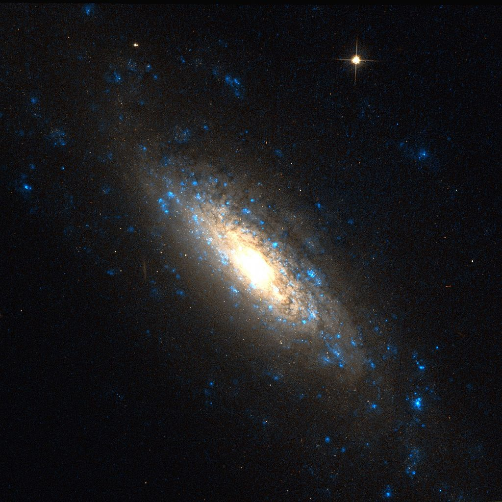
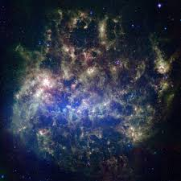
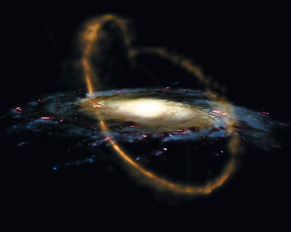

Above The Earth
There are morethan 2 trillion galaxy in the universe.Here are some example of galaxy closest to Earth.
The Milky Way is the galaxy that contains our Solar System. The descriptor "milky" is derived from the galaxy's appearance from Earth: a band of light seen in the night sky formed from stars that cannot be individually distinguished by the naked eye.
The Canis Major Dwarf Galaxy or Canis Major Overdensity is a disputed dwarf irregular galaxy in the Local Group, located in the same part of the sky as the constellation Canis Major.
The Sagittarius Dwarf Spheroidal Galaxy, also known as the Sagittarius Dwarf Elliptical Galaxy, is an elliptical loop-shaped satellite galaxy of the Milky Way. It consists of four globular clusters, the main cluster having been discovered in 1994
The Large Magellanic Cloud is a satellite galaxy of the Milky Way. At a distance of about 50 kiloparsecs, the LMC is the second- or third-closest galaxy to the Milky Way, after the Sagittarius Dwarf Spheroidal and the possible dwarf irregular galaxy known as the Canis Major Overdensity.
The Small Magellanic Cloud, or Nubecula Minor, is a dwarf galaxy near the Milky Way. Classified as a dwarf irregular galaxy, the SMC has a diameter of about 7,000 light-years, contains several hundred million stars, and has a total mass of approximately 7 billion solar masses.
The Draco Dwarf is a spheroidal galaxy which was discovered by Albert George Wilson of Lowell Observatory in 1954 on photographic plates of the National Geographic Society's Palomar Observatory Sky Survey. It is part of the Local Group and a satellite galaxy of the Milky Way galaxy.
Milky Way
The Milky Way is the galaxy that contains our Solar System. The descriptor "milky" is derived from the galaxy's appearance from Earth: a band of light seen in the night sky formed from stars that cannot be individually distinguished by the naked eye.
Canis Major Dwarf
The Canis Major Dwarf Galaxy or Canis Major Overdensity is a disputed dwarf irregular galaxy in the Local Group, located in the same part of the sky as the constellation Canis Major.
Saggitarius Dwarf Spheroidal
The Sagittarius Dwarf Spheroidal Galaxy, also known as the Sagittarius Dwarf Elliptical Galaxy, is an elliptical loop-shaped satellite galaxy of the Milky Way. It consists of four globular clusters, the main cluster having been discovered in 1994
Large Magellanic Cloud
The Large Magellanic Cloud is a satellite galaxy of the Milky Way. At a distance of about 50 kiloparsecs, the LMC is the second- or third-closest galaxy to the Milky Way, after the Sagittarius Dwarf Spheroidal and the possible dwarf irregular galaxy known as the Canis Major Overdensity.
Small Magellanic Cloud
The Small Magellanic Cloud, or Nubecula Minor, is a dwarf galaxy near the Milky Way. Classified as a dwarf irregular galaxy, the SMC has a diameter of about 7,000 light-years, contains several hundred million stars, and has a total mass of approximately 7 billion solar masses.
Draco dwarf
The Draco Dwarf is a spheroidal galaxy which was discovered by Albert George Wilson of Lowell Observatory in 1954 on photographic plates of the National Geographic Society's Palomar Observatory Sky Survey. It is part of the Local Group and a satellite galaxy of the Milky Way galaxy.